Hum Mud Gingerbread Men
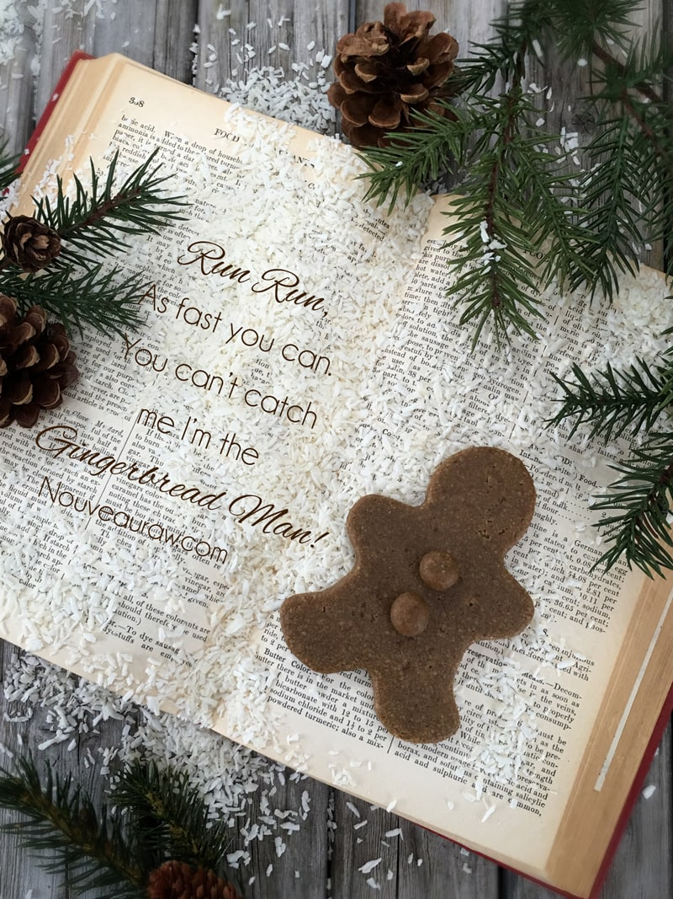
~ raw, vegan, gluten-free ~
It’s time to channel your inner child! Run around outside, even if there is snow on the ground. Last year Bob and I ran out into the snow naked and made snow angels. If that isn’t sobering, I don’t know what is. lol
Do cartwheels. Roll down a grassy hill. Dress up and be silly! I really don’t care how young or old you are. Tactile, hands-on, playful experiences are known to improve your mood and lower your stress levels, which contributes to overall health and well-being.
Enjoy a healthy lifestyle by incorporating more play into your everyday life. With that being said, we are going to be making holiday gingerbread cookies! There is no age limit ago it is meant to be enjoyed by all.
Block out some time out for this event. Let go of the day’s concerns, turn on some heart-warming music, have some snacks and drinks, and fire up the creativity. There is no right or wrong way in making these gems.
For decorating ideas pull out dried fruits, shredded coconut, fruit leathers (they make great cutout clothing), and any other edible item that sounds and looks good. To “glue” cranberry buttons or fruit leather clothing onto the gingerbread men, soften some coconut butter, and use a toothpick to apply it. Let that inner child out.
Let’s talk ingredients…
For the almond flour, I used a fine almond flour, not ground almonds. You can achieve a raw fine almond flour by soaking, removing the skins, and dehydrating almonds. Dehydrate them and then grind to a finer flour texture. If you don’t skin the almonds, the candies will have brown flecks in them. And if you just use ground almonds, not only will you have the brown flecks too, but it will be grainy. If you are not able to do this and 100% raw isn’t your top priority, you can purchase almond flour. Do not use oat flour for this cookie, I found it to have a bitter taste.
For sweeteners, I used raw coconut crystals which taste like brown sugar and I also used molasses. Molasses isn’t a raw product but this is a preferred sweetener for this particular cookie that I developed for my husband. You can read the story about it (here). You can use yacon or raw coconut nectar instead but you might need to up the cinnamon, cloves, and ginger. Taste test as you go. These two optional sweeteners are very close to viscosity as molasses and have a richer flavor to them.
Enjoy this recipe, and let me know how your inner child faired throughout this experience. :)
Yields 9 (1/4 cup) cookies
Decorations:
Preparation:
- In the food processor, fitted with the “S” blade, combine the almond flour, coconut crystals, cinnamon, cloves, ginger, and salt. Process together making sure all the spices are distributed.
- I created a fine almond flour from the dehydrated almond pulp.
- You can create your own the same way, purchase a store-bought processed almond flour or use ground nuts (will change the texture of the cookie.)
- Add sweetener, coconut oil, and water. Process until it forms a thick dough ball as it spins about the food processor.
- Roll into a ball, wrap in plastic, and place in the freezer for 1 hour. This will reduce the stickiness when rolling it out.
- Place a large piece of plastic wrap on the counter, place the dough ball in the center and cover with another plastic sheet. Roll out to desired thickness and pull out the cookie cutters!
- I noticed after using the cookie-cutter a few times, the dough started to stick, making it harder to remove from the cutter. I recommend washing the cookie-cutter every so often to prevent this.
- Place the cookie shapes on the mesh sheet that comes with the dehydrator.
- Dehydrate for 1 hour at 145 degrees, then reduce to 115 degrees (F) for 10-16 hours.
- They should be dry on the outside and a bit moist on the inside.
- I found these did well stored in a container with a loose-fitting lid. They are a moist cookie. Bob, on the other hand, liked them sitting out at room air, causing them to dry out a bit more.
- Decorations:
- I used the softened coconut butter as a “glue.” With a toothpick, I would dab the coconut butter where ever I wanted the shredded coconut to stick. If you want to make it look really fluffy, I would put the coconut butter on, add the coconut, let it dry and do the process one more time. This built height.
- To create the “leather” appearance, I made the chocolate banana wraps (without the chopped almonds on it). I then used the same cookie-cutter as the cookie to cut out the shapes. I found that cookie presses worked well on the leather, making impressions on it.
- Just have fun with it!!
Culinary Explanations:
- Why do I start the dehydrator at 145 degrees (F)? Click (here) to learn the reason behind this.
- When working with fresh ingredients it is important to taste test as you build a recipe. Learn why (here).
- Don’t own a dehydrator? Learn how to use your oven (here). I do however truly believe that it is a worthwhile investment. Click (here) to learn what I use.
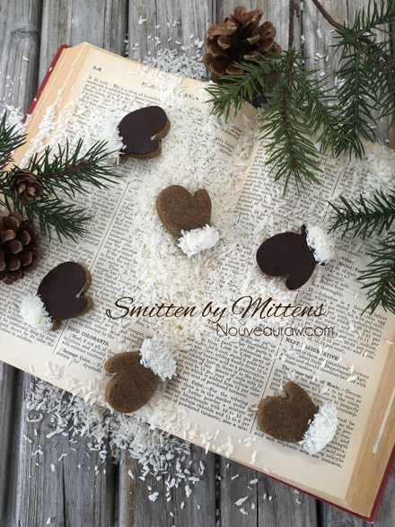
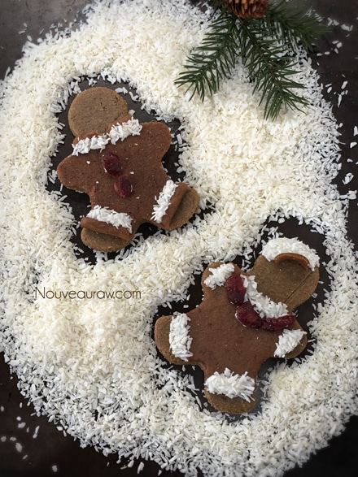
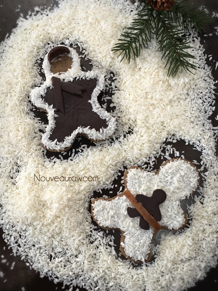
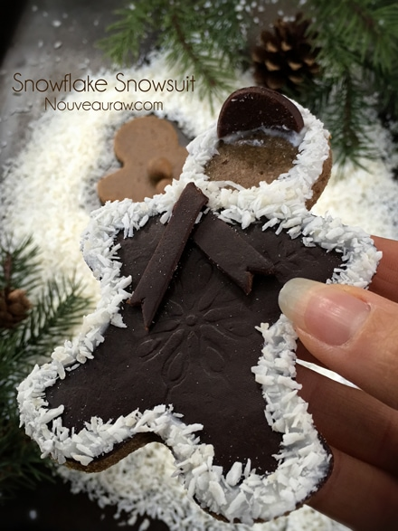
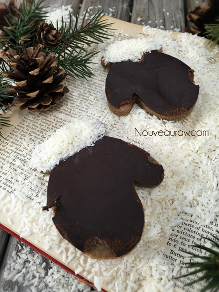
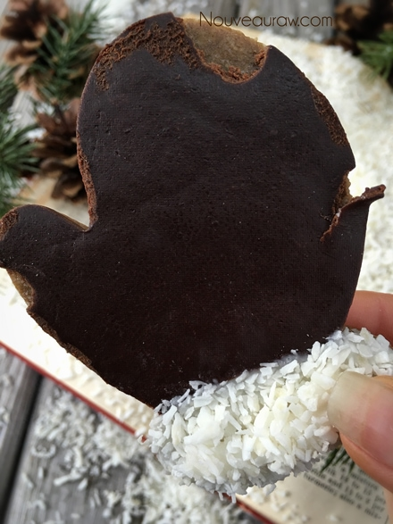
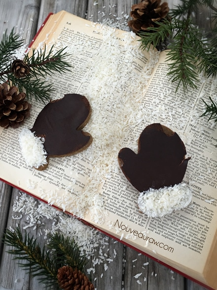
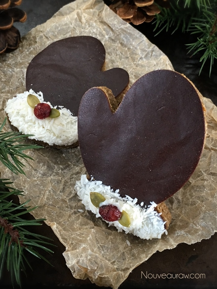
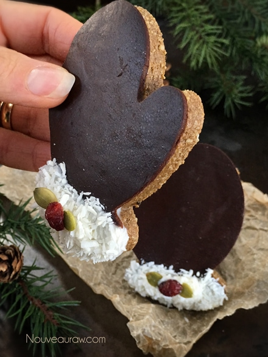
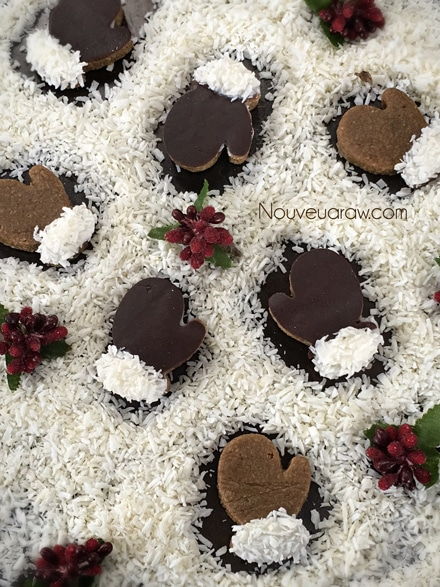
© AmieSue.com